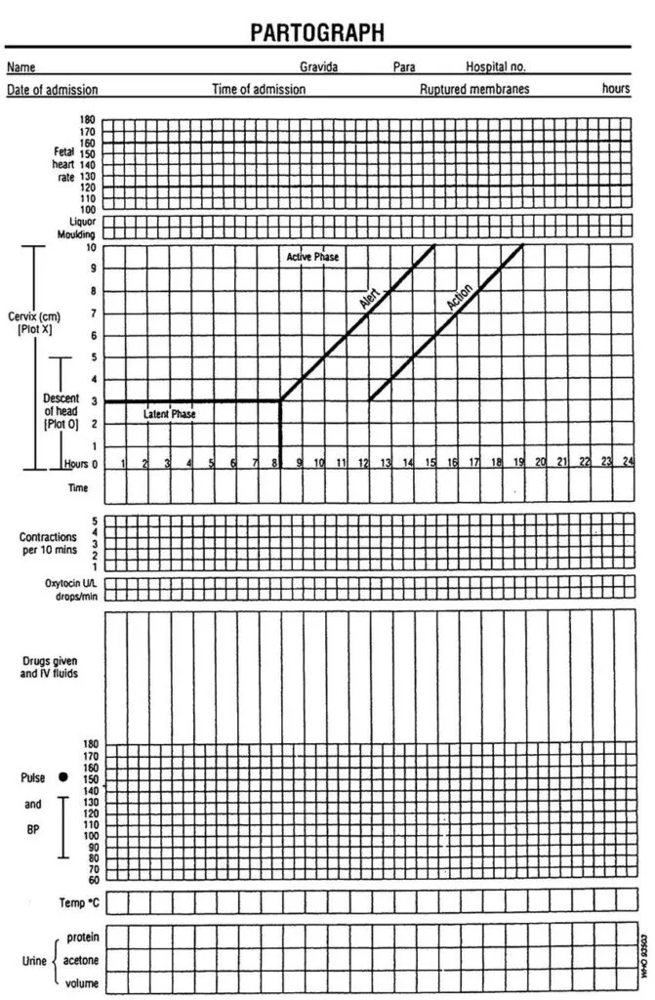

Expanded Nursing Uganda Explanation
Partograph should be reviewed through safe maternal and newborn assessment, early recognition of danger signs, respectful communication and timely referral. Connect the definition to vital signs, bleeding, fetal or newborn wellbeing, patient education and local protocol requirements.
01 PARTOGRAPH
Partograph is a graph or tool used to monitor fetal condition, maternal condition and labour progress during the active 1st stage of labour so as to be able to detect any abnormalities and be able to take action. It’s only used during 1st stage of labour. It is used for recording salient conditions of the mother and the fetus.
02 USES OF A PARTOGRAPH
- To detect labour that is not progressing normally.
- To indicate when augmentation of labour is appropriate.
- To recognize CPD when obstruction occurs.
- It increases the quality of all observations on the mother and fetus in labour.
- It serves as an “early warning system”
- It assists on early decision of transfer and augmentation.
Who should not use a partograph?
- Women with problems which are identified before labour starts or during labour which needs special attention.
- Women not anticipating vaginal delivery (elective C/S).
03 Parts of a Partograph
A partograph has 3 parts i.e. –
- Fetal part
- Maternal part
- Labour progress part
Observations charted on a partograph:
- The progress of labour > Cervical dilatation 4 hourly > Descent 2 hourly > Uterine contractions
- Fetal condition > Fetal heart rate ½ hourly > Membranes and liquor 4 hourly > Moulding of the fetal skull 4 hourly.
- Maternal condition > Pulse ½ hourly > Blood Pressure 2 hourly >Respiration and > temperature 4 hourly Urine; – volume 2 hourly, acetone, proteins and sugars. > Drugs > I.V fluids 2 hourly and Oxytocin regimen.
- The partograph should be started only when a woman is in active phase of labour.
- Contractions must be 1 or more in 10 minutes.
- Cervical dilatation should be 4cm or more.
- Fetal heart; It is taken 1/2 hourly unless there is need to check frequently i.e. if abnormal every 15 minutes and if it remains abnormal over 3 observations, take action. The normal fetal heart rate is 120-160b/m. below 120b/m or above 160b/m indicates fetal distress.
- Molding; This is felt on VE. It is charted according to grades. State of moulding Record Absence of moulding. (-) Bones are separate and sutures felt (0) Bones are just touching each other (+) Bone are over lapping but can be Separated (++) Bones are over lapping but cannot be separated (+++)
- Liquor amnii; This is observed when membranes are raptured artificially or spontaneously. It has different colour with different meaning and meconium stained liquor has grades. State of liquor Record Clear (normal) (C) Light green in colour (m+) Moderate green, more slippery (m++) Thick green, meconium stained (m+++) Blood stained (B)
- Membranes; State of membranes Record
- Membranes intact (I)
- Membranes raptured (R)
5. Cervical dilatation, The dilatation of the cervix is plotted with an “X”. Vaginal examination is done at admission and once in 4 hours. Usually we start recording on a partograph at 4cm. Alert line starts at 4cm of cervical dilation to a point of expected full dilatation at a rate of 1cm per hour Action line– parallel and at 4 hours to the right of the alert line.
6. Descent of presenting part. Descent is assessed by abdominal palpation. It is measured in terms of fifths above the brim. The width of five fingers is a guide to the expression in the fifth of the head above the brim. A head that is ballotable above the brim will accommodate the full width of five fingers. As the head descends, the portion of the head remaining above the brim will be represented by fewer fingers. It is generally accepted that the head is engaged when the portion of the head above the brim is represented by 2 or less fingers. Descent is plotted with an “O” on the graph
7. Uterine contractions This is done ½ hourly for every 30 minutes. The duration, frequency and strength of contraction is observed. Observe the contractions within 10 minutes.
-Mild contractions last for less than 20 seconds. -Moderate contractions last for 20-40 seconds. -Strong contractions last for 40 seconds and above. When plotting and shedding contractions use the following symbols. Dots for mild contractions Diagonal lines for moderate contractions Shade for strong contractions
- Pulse ; this is checked every 30 minutes. The normal pulse is 70-90b/min. The raised pulse may indicate maternal distress, infection especially if she had rapture of membranes for 8-12 hours and in case of low pulse, it can be due to collapse of the mother.
- Blood pressure ; it is taken 2 hourly. The normal is 90/60-140/90mmHg. Any raise of 30mmHG systolic and 20mmhg diastolic from what is regarded as normal or if repeated over 3 times and remains high, test urine for albumen to rule out pre-eclampsia.
- Temperature; this is taken 4 hourly. The normal range is between 37.2 0 c to 37.5 0 c. Any raise in temperature may be due to infections, dehydration as a sign of maternal distress or if a mother had early rapture of membranes.
- Urine ; the mother should pass urine atleast every after 2 hours and urine should be tested on admission.
- Fluids ; she should be encouraged to take atleast 250-300 mls every 30 minutes. Any type of fluid can be given hot or cold except alcohol. The fluid should be sweetened in order to give her strength.
- Emotional support:
Midwife should rub the mothers backto relieve pain. Allow the mother to move around or sit in bed if membranes are still intact. Re-assure the mother and keep her informed about the progress of labour to relieve anxiety. Allow her to talk to relatives and husband. Allow her to read or do knitting.
2. Nutrition; Encourage mother to take light and easily digested food like bread, soup and sweet tea to rehydrate her and provide energy.
3. Elimination; Taking care of the bladder and bowel. Encourage mother to empty bladder every 2 hours during labour. Every specimen is measured and tested for acetone, albumen, sugars and findings interpreted and recorded. Pass catheter if mother is unable to pass urine.
4. Personal hygiene; Allow mother to go for bath in early labour or on admission if condition allows. If membranes rapture, give a clean pad and ask mother to change frequently to prevent infections. VE should be done only after aseptic technique.
5. Ambulation and position: In early labour, mother is encouraged to walk around to aid descent of presenting part. During contractions, ask mother to lean forward supporting herself on a chair or bed to reduce discomfort. Allow mother to adopt a position of her choice except supine position. Mother should be confined to bed when membranes rapture in advanced stage of labour.
6. Prevention of infections Strict aseptic technique should be maintained when doing a VE and vulval swabbing. When membranes rapture early, vulval toileting should be done 4 hourly to reduce the risk of infections. Put mother on antibiotics to avoid risk of ascending infections in early raptured of membranes. Frequent sponging is done, bed linen changed when necessary when a mother is confined in bed. The midwife should pay attention to her own hygiene and be careful to wash her hands before and after attending to the mother.
7. Sleep and rest Mother is encouraged to rest when there is no contraction (rest in between contractions).
- Abnormality found in urine.
- Failure to pass urine.
- Rise in temperature, pulse and BP.
- Hypertonic uterine contractions.
- Rapture of membranes with meconium stained liquor grade 2 and 3.
- Failure of presenting part to descend despite good uterine contractions.
- Tenderness of abdomen.
- Bleeding per vagina.
- Fall in BP.
- Raise in fetal heart rate.
- Infections
- Early rapture of membranes
- Cord prolapse
- Supine hypotensive syndrome
- Fetal distress
- Maternal distress
- APH
- PET and eclampsia
- Prolonged labour
- Obstructed labour
04 Nursing Uganda Clinical Lens
Use Partograph as a practical nursing topic, not only a memorized definition. Read the topic through the safety of two patients: the mother and the fetus or newborn.
- What to understand first: define partograph, identify the normal or expected pattern, then explain what changes when the patient is unwell.
- Why it matters in care: the nurse must recognize risk early, explain findings clearly, document accurately and know when to escalate.
- How to revise it: connect each point to assessment, nursing diagnosis or care problem, intervention, rationale and evaluation.
05 Assessment Guide
- Maternal vital signs, bleeding, pain, contractions, uterine tone and danger signs.
- Fetal or newborn wellbeing, feeding, temperature, breathing and activity.
- History of pregnancy, parity, medications, allergies, investigations and referral risks.
06 Nursing Priorities, Rationales and Outcomes
- Recognize danger signs early and escalate without delay.
- Provide respectful communication, privacy, infection prevention and clear documentation.
- Teach the mother what to monitor at home and when to return urgently.
The rationale for these priorities is patient safety: nursing actions should prevent deterioration, reduce discomfort, support recovery and create clear evidence for the next caregiver.
- Expected outcome: Mother and baby remain stable, danger signs are acted on early, and the family understands follow-up instructions.
07 Patient Teaching and Revision Check
- Explain partograph in simple language the patient or caregiver can repeat back.
- Teach warning signs, medicine or follow-up instructions, hygiene or lifestyle points where relevant.
- For exams, prepare a short answer using: definition, causes or risk factors, signs, assessment, management, complications and prevention.
- For ward practice, document baseline findings, actions taken, patient response and the plan for review.
Illustrations and Diagrams (2)


Related Video Lectures
Watch nursing lecture videos on YouTube for this topic. Opens in a new tab.
Watch on YouTubeExternal link: YouTube may use its own cookies and terms. Nursing Uganda is not affiliated with YouTube.